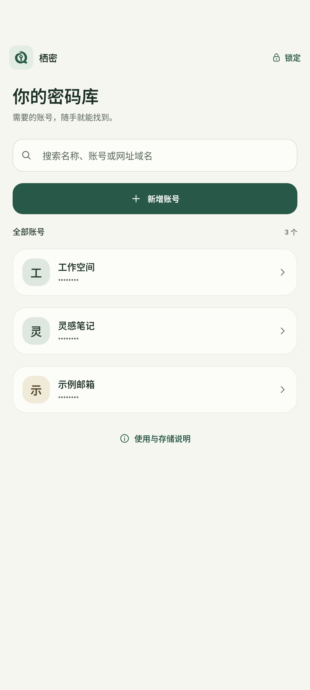
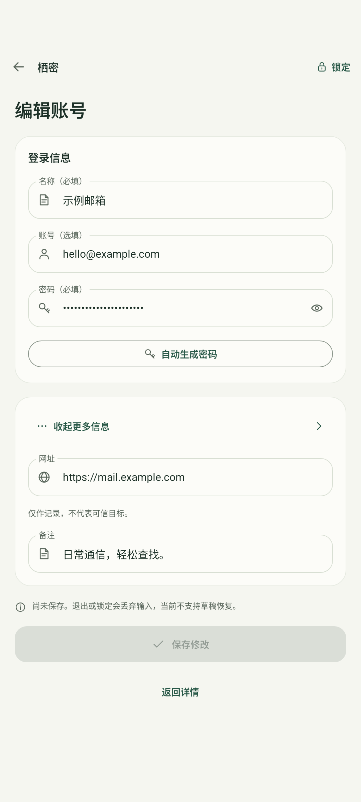
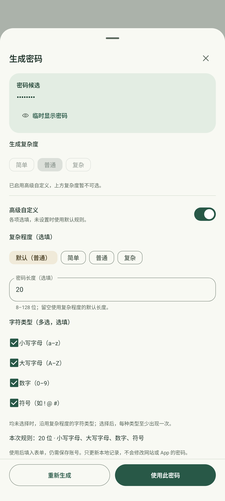
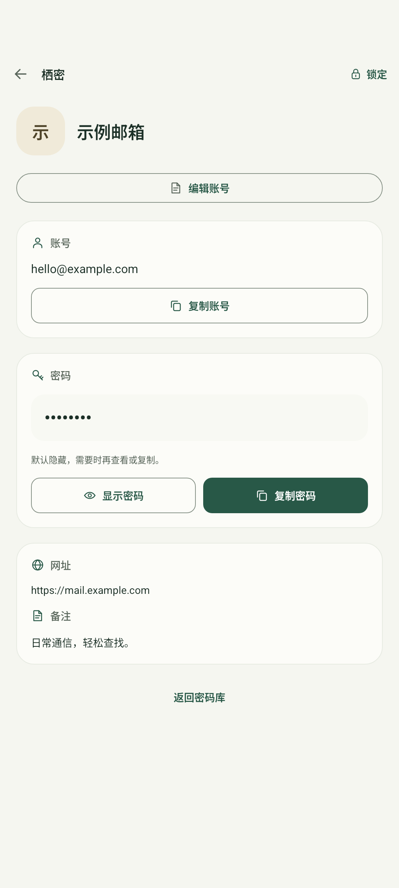

一把主密码，本地加密保存。
账号、密码、网址与备注保存在本机加密库中，由你的主密码解锁。
ANDROID · 本地密码管理 · 开源
给零散的账号一个安静的归处。记录、编辑、生成密码，在熟悉的手机里，从容处理日常的小事。
v1.0.0 · Android 10+下载前了解当前限制

密码库只在本机
无需云账户与同步
源码开放，边界透明
01 / 日常，简单一点
把账号、密码、网址和备注收在一起。需要改动时随手编辑，需要新密码时按你的规则生成。



1.0.0 真实界面 · 合成资料示例
账号、密码、网址与备注保存在本机加密库中，由你的主密码解锁。
支持主动锁定与后台锁定。显示的密码会定时隐藏，敏感剪贴板按规则清理。
源码、验证记录和待完成事项可查阅。本地存储不等于全部安全验证已经完成。
已支持本地建库、新增与编辑、密码生成、搜索、显示与复制。下一步，继续完善离线备份与恢复。
查看实现与验证记录 ↗公开构建，一起参与
欢迎反馈问题，或贡献代码、测试与文档。反馈中请只使用合成资料。